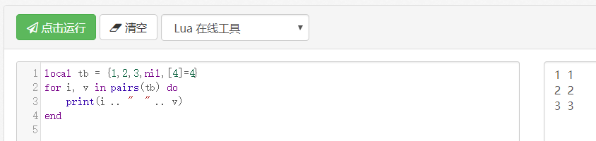
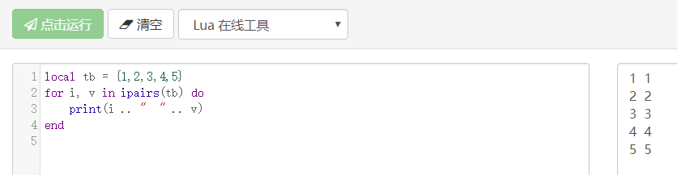
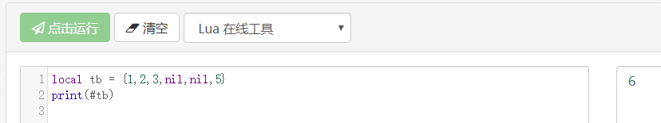

前言
Lua是Unity开发比较重要的一个脚本语言，它的存储就是Key-Value，Lua用于热更新脚本语言。但学习Lua比较难理解的我认为应该属于元表和遍历这两块了，当然闭包也可以小结一下，下面就针对这几个方面做一个总结归纳，以便我日后忘记可以回顾！
在线编辑器
元表
Lua我们访问对应的key来得到value的值，但无法对两个table进行操作。因此Lua提供了元表(Metatable),允许我们改变的行为，每个行为对应一个元方法，元方法下面介绍。
Lua本身不是面向对象语言，但可以利用Lua的table来扩展面向对象，也就是我们常用的继承。我们如何实现一个子类继承父类并且能打印出子类的方法和父类的方法。主要思想是setmetatable和getmetable，子类定义个super变量指向父类对象，然后子类就通过这个super变量来访问父类的成员，下面是代码实现：
1 |
|
运行结果:
由此可见打印了子类和父类的Hello方法
元方法
元方法之前有过介绍,可以点击查看一下。
遍历
遍历最常用的也是我们容易搞混的pairs和ipairs。
- pairs
pairs我们可以理解将Lua存储中的内容全部遍历出来，但Lua的存储有时候并不是像我们想象中的那样table中写了几个遍历就会存储几个变量，大致分为一下几种情况：
1.纯array，例如{1,2,3,4,5}，或者{1,2,3,nil,5}这样的

2.纯KeyValuePair(KV)，例如{[1] = 1,[2] = 2}这样的，但如果中间索引间断或者索引从1开始，例如{[3] = 2,[1]= 1}或者{[2]=2,[3]=3}

3.array和kv混合的类型，例如{[1] = 1,[2] = 2,[3] = 3,4,5,6}或者{1,2,3,[3] = 4,5}或者{1,2,3,[4]=4,5}或者{1,2,3,nil,[4]=4}



由此可见小结一下，pairs会遍历出所有的table内存里面的值，这里并不是我们所看到的所有值，table存储规律是优先存储array，并且索引从1开始，碰到nil会跳过并且索引+1，如果kv类型的值，key没有冲突，那则继续存储，如果key有冲突则忽略不会存储。pairs会将所有存储的值都打印出来。
- ipairs
ipairs也是将table存储的值打印出来，只不过有个特殊的规律是从1开始打印，并且不能间断，如果碰到nil的值就不会继续遍历，下面我们也来用几组情况的数据说话
1.纯array，例如{1,2,3,4,5}，或者{1,2,3,nil,5}这样的


2.纯KeyValuePair(KV)，例如{[1] = 1,[2] = 2}这样的，但如果中间索引间断或者索引从1开始，例如{[3] = 2,[1]= 1}或者{[2]=2,[3]=3}


3.array和kv混合的类型，例如{[1] = 1,[2] = 2,[3] = 3,4,5,6}或者{1,2,3,[3] = 4,5}或者{1,2,3,[4]=4,5}或者{1,2,3,nil,[4]=4}


#计数
计算table的长度，可以用#来统计，其实#就是统计table的存储长度，到底存了几个键值对，但我们就要搞懂Lua是如何存储的了。我经过几组数据来介绍一下：
经过上面的规律，我们应该知道lua的存储规律，就是优先将array变成kv，依次从1开始，如果碰到nil则不存储并且索引号+1，array存储结束之后然后继续在当前的索引号的基础上+1继续找kv的值去存储，最后统计存储的kv的键值对数量
1.纯array并且包含nil，例如{1,2,3,nil}或者{1,2,3,nil,5}

2.纯kv，例如{[1] = 1,[3] = 3}或者{[2] = 2, [3] = 3}或者{[1] = 1,[2] = nil,[3] = 3}


3.array和kv混合，例如{1,2,3,nil,[4]=5}或者{1,2,3,nil,[5]=5}


总结一下，#的规律就是从1开始统计，优先统计array，如果碰到nil就不统计，如果纯数字，nil后面还有值的话(针对纯array而言)会索引++,也会计入统计,如果是kv,碰到nil就不统计了
闭包
闭包是由函数以及它所访问的非局部变量组成，这个非局部变量也不是全局变量，这个变量称作upvalue，如果没有闭包的话，这个函数只能访问函数里面的变量或者全局变量。
闭包实现原理：
当Lua编译一个函数时，它会生成一个原型（prototype），原型中包括函数的虚拟机指令、函数中的常量（数值和字符串等）和一些调试信息。在任何时候只要Lua执行一个function .. end表达时，它都会创建一个新的闭包（closure）。每个闭包都有一个相应函数原型的引用以及一个数组，数组中每个元素都是一个对upvalue的引用，可以通过该数组来访问外部的局部变量（outer local variables）。值得注意的是，在Lua 5.2之前，闭包中还包括一个对环境（environment）的引用，环境实质就是一个table，函数可以在该表中索引全局变量，从Lua 5.2开始，取消了闭包中的环境，而引入一个变量_ENV来设置闭包环境。由此可见，函数是编译期概念，是静态的，而闭包是运行期概念，是动态的。
更多内容可以访问下面相关连接！